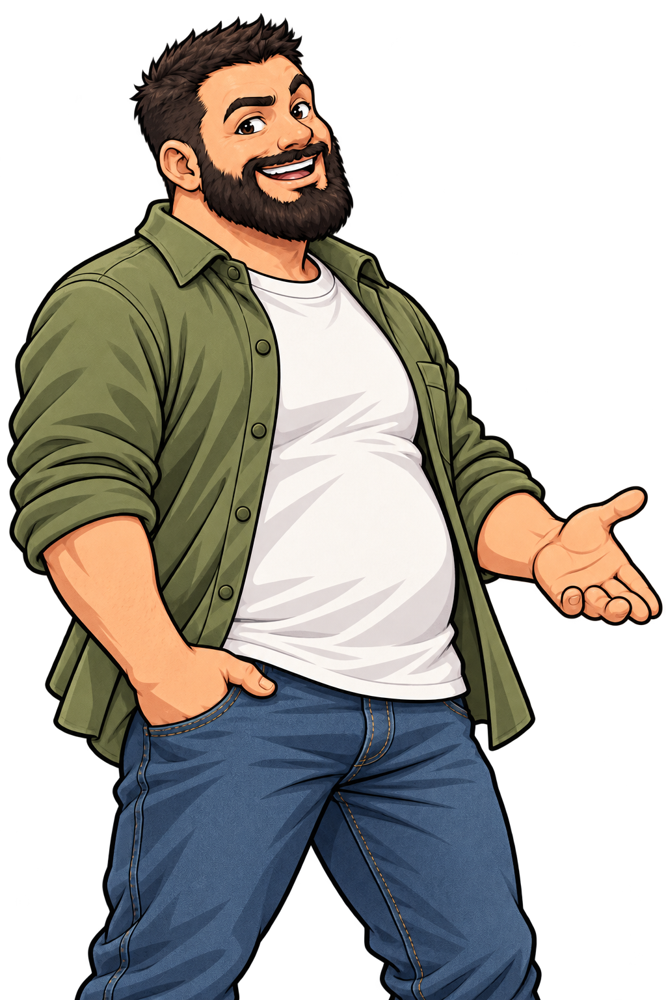

Grammaire : comprendre une phrase
Parcours 2H–8H. On commence par reconnaître une phrase, puis on observe ses groupes, on l’enrichit et on la transforme. Les classes grammaticales et les fonctions apparaissent progressivement dans le jeu.

Noireau t’accompagne. Dans chaque niveau, observe un exemple, essaie plusieurs questions dans le jeu, puis utilise le cahier pour écrire. Les séries du jeu changent quand tu rejoues.
🟢 Exemple manipulé
On peut observer la classe des mots, la fonction des groupes et le sens des informations.
Le sujet indique de qui ou de quoi on parle ; il ne fait pas toujours une action. Le groupe verbal contient le verbe. « Dans la forêt » indique un lieu : il faut examiner son rôle dans la phrase pour nommer sa fonction.
La progression en 14 niveaux
Les repères à apprendre, niveau par niveau
1–2 · La phrase
Une phrase donne un message que l’on comprend. On cherche d’abord le sens, puis on vérifie la majuscule et le signe final.
Exemple : « Le chien court. » est une phrase. « Dans le jardin. » demande généralement une suite pour raconter ce qui se passe.
🔵 Essaie
Choisis entre « Le bateau avance. », « sous le grand pont » et « une grande voile ». Complète ensuite « Le bateau… » avec une action.
3–4 · Ordre, sujet et verbe
Dans « Les enfants jouent », le groupe sujet est « Les enfants » et le verbe est « jouent ». Le verbe s’accorde avec le sujet : « L’enfant joue », « Les enfants jouent ».
🔵 Essaie
Remets « joue / la fille / dehors » en ordre. Dans « Les oiseaux chantent », trouve le sujet, puis remplace « oiseaux » par « oiseau » : que devient le verbe ?
5–7 · Groupes et groupe nominal
Des mots fonctionnent ensemble : « la petite maison » est un groupe nominal. « la » est un déterminant, « maison » un nom et « petite » un adjectif. L’adjectif s’accorde avec le nom : « des petites maisons ».
🔵 Essaie
Construis « les grandes fleurs ». Repère le nom dans « un vieux pont ». Complète « une porte… » avec « ouverte » ou « ouvert ».
8 · Sujet et groupe verbal
Dans « La jeune musicienne répète une chanson », « La jeune musicienne » remplit la fonction de sujet ; c’est un groupe nominal (GN). « répète une chanson » est le groupe verbal (GV) : il contient le verbe et son complément de verbe (CV).
9–10 · Fonction et sens des compléments
Dans « La joueuse lance la balle dans la cour », la balle complète le verbe : c’est un complément de verbe (CV). dans la cour peut être placé au début : c’est ici un complément de phrase (CP). Le lieu, le temps et la manière sont des valeurs de sens. Un groupe qui indique un lieu n’est pas automatiquement un CP : dans « Elle va à Lausanne », « à Lausanne » complète le verbe « va ».
Pour tester un CP, essaie de déplacer ou de supprimer le groupe. Vérifie toujours que la phrase garde le sens voulu.
🔵 Essaie
Dans « Le renard court doucement dans la forêt le matin », trouve la manière, le lieu et le temps. Déplace « le matin » sans changer le sens.
11 · Types et formes
Déclaratif et interrogatif sont des types de phrase. Positive et négative sont des formes. Pour nier, on place souvent « ne … pas » autour du verbe : « Lina ne chante pas. » Devant une voyelle, « ne » devient « n’ » : « Le chien n’aboie pas. » Pour questionner : « Est-ce que Lina chante ? »
12 · Pronoms et accords
On peut remplacer un groupe sujet par un pronom : « Les filles » devient « elles ». Le verbe s’accorde : « Elles chantent. » « Nous chantons. »
🔵 Essaie
Remplace « Le vieux pont » et « Les garçons » par un pronom. Choisis entre « Nous lisons » et « Nous lisent ».
13–14 · Sujets longs et compléments de verbe
Le sujet peut être long : « Les oiseaux du grand jardin chantent ». Son nom noyau est « oiseaux ». Il peut aussi se trouver après le verbe : « Dans la cour jouent les enfants ».
Dans « Lina offre un livre à Sami », « un livre » est relié directement au verbe : c’est le complément de verbe direct (CVD). « à Sami » est relié par la préposition « à » : c’est le complément de verbe indirect (CVI). Les deux appartiennent au groupe verbal.
Repère pour l’enseignant · terminologie romande
Le PER utilise « sujet », « groupe verbal (GV) », « complément de verbe (CV) » et « complément de phrase (CP) ». Pour distinguer les compléments du verbe, on emploie CVD et CVI ; COD et COI sont d’autres dénominations, mais pas les sigles retenus ici. La grammaire de référence romande nomme « prédicat » la fonction généralement remplie par le groupe verbal. Ce terme relève d’un prolongement et n’est pas exigé dans les exercices 2H–8H du jeu.
🔴 Je montre ce que je sais
1. Trouve le sujet dans « Au loin brillent deux étoiles ». 2. Accorde « Les fleurs du jardin (pousse / poussent) ». 3. Construis une phrase avec un lieu et un temps. 4. Transforme-la en question ou en phrase négative.
Fais cet essai sans ouvrir le corrigé, puis vérifie tes choix.